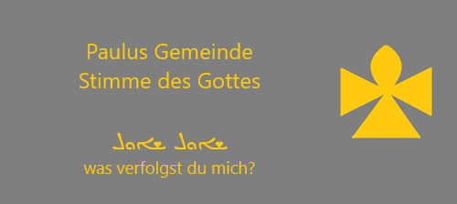
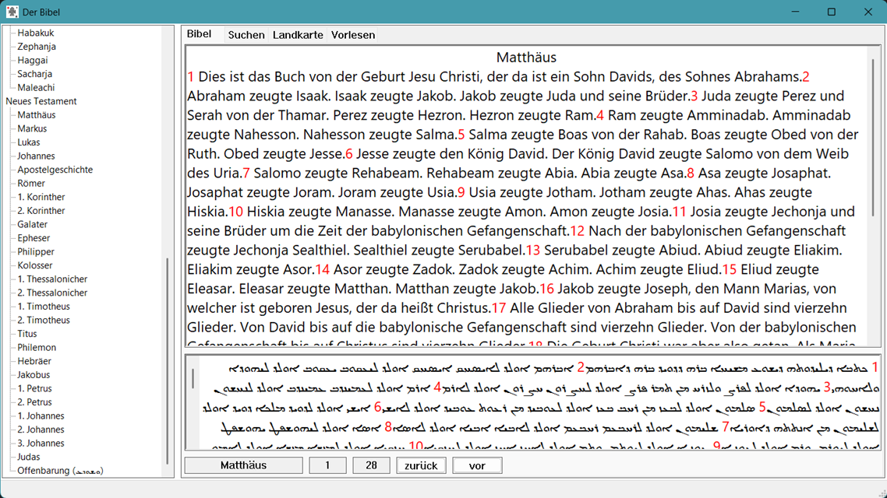
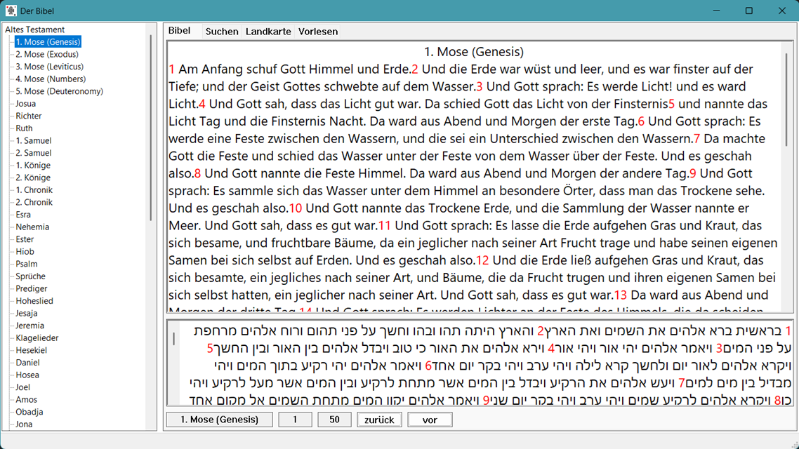
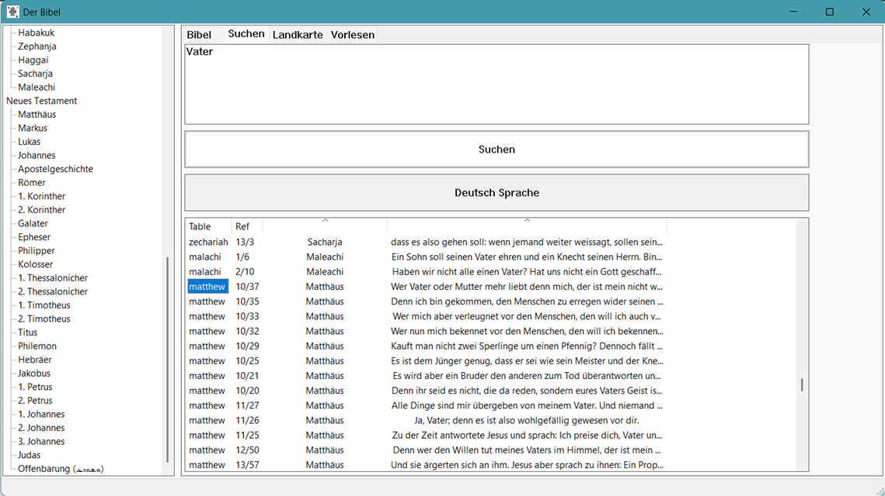
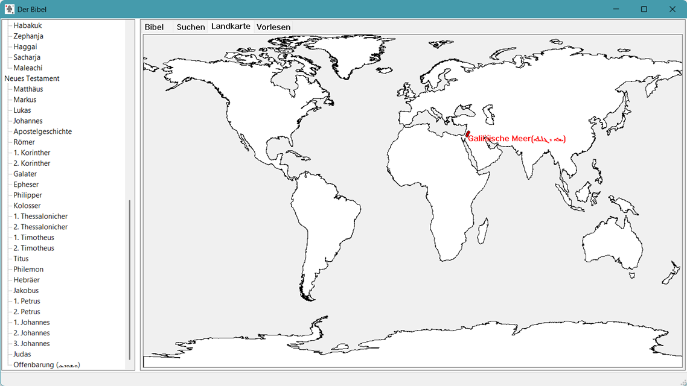
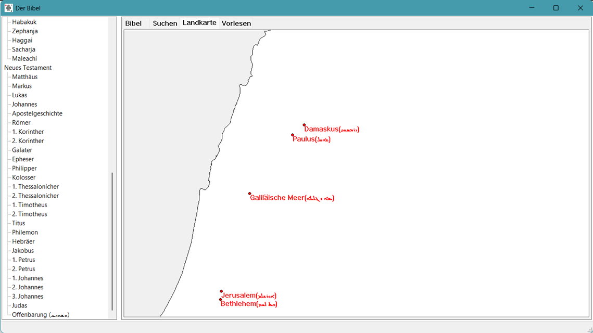
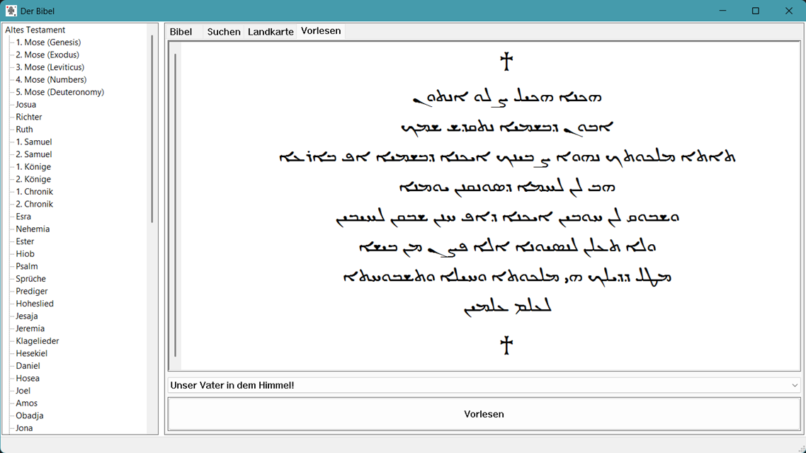
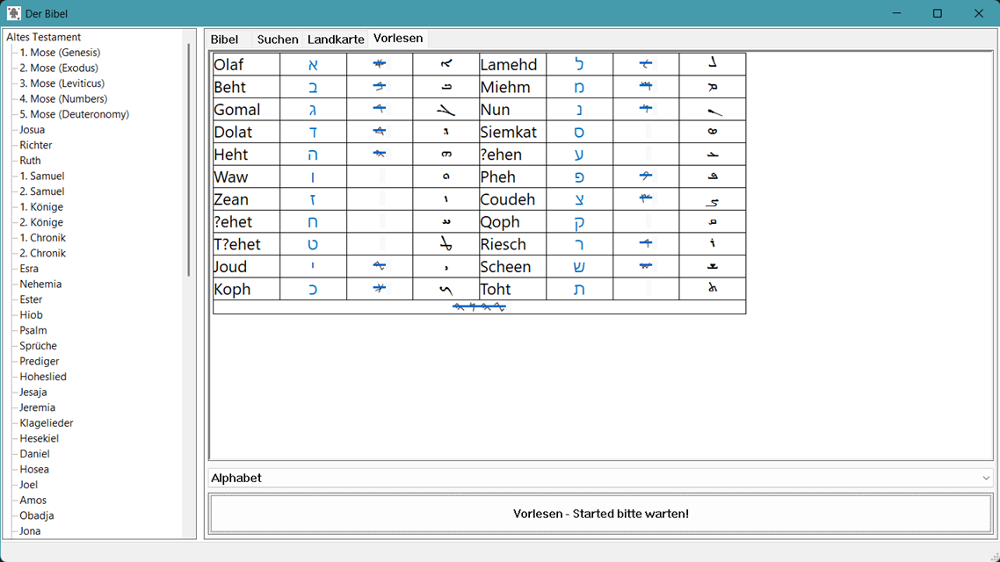
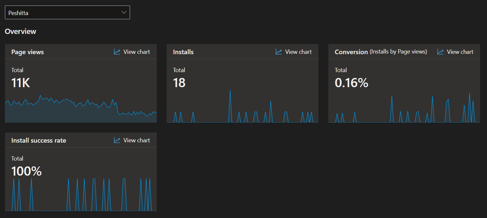

Peshitta
ܝܥܫܝܛܐ
About
The Peshitta Bible was written in Western Aramaic. Translated from Hebrew, it contains the language Jesus actually spoke in his interactions with people.
Its oldest manuscripts date back to the 5th century.
It serves as an important reference for Western Aramaic and, in particular, for the language of Jesus.
The Application
The application aims to establish a connection and a link between Western Aramaic and Germany.
References: Old Testament (Tanakh) and Hebrew Bible
Features
Easy reading and searching; Aramaic Bible reading; vocabulary analysis; maps.
Download
Further references
Bilder








Statistik - Microsoft Reports - Drei Monaten
